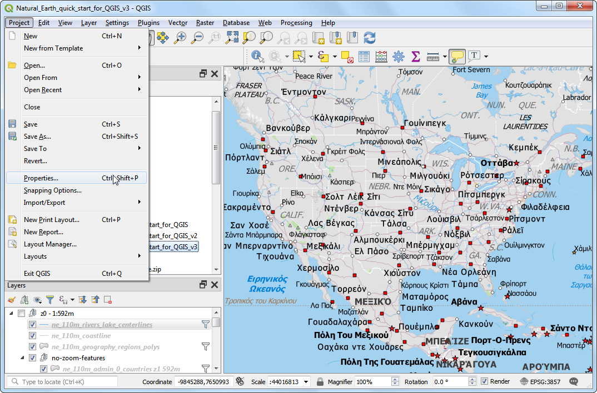
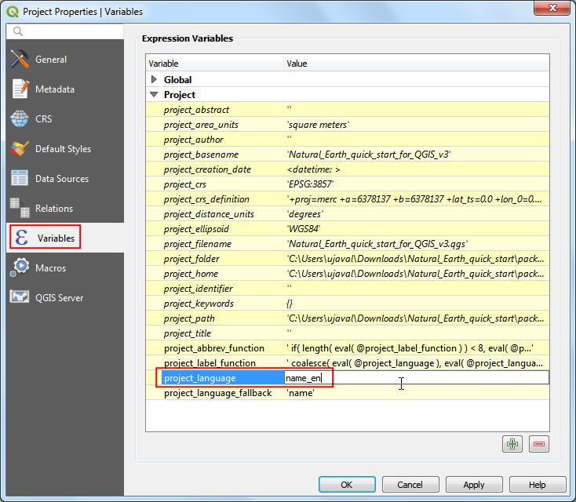
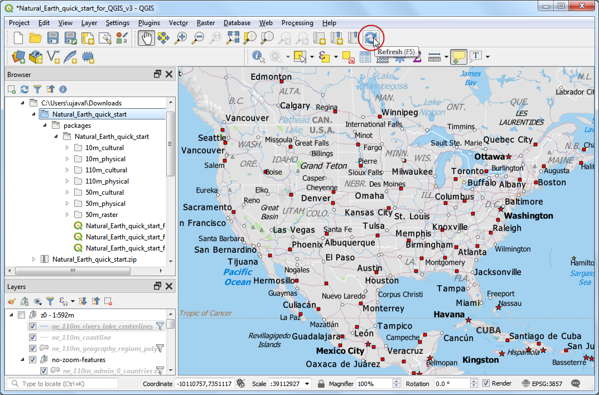
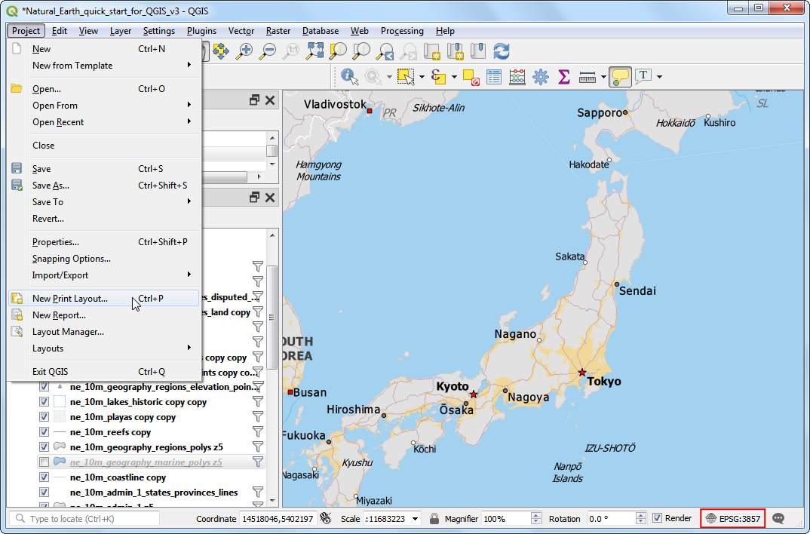
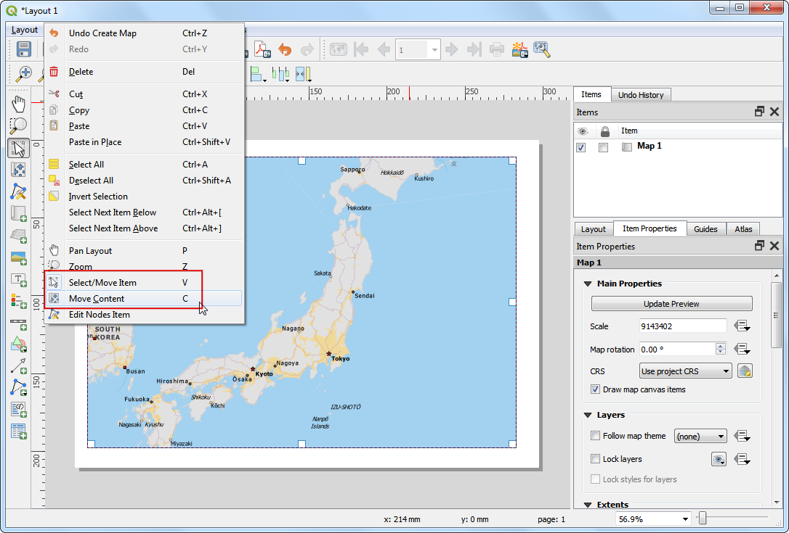
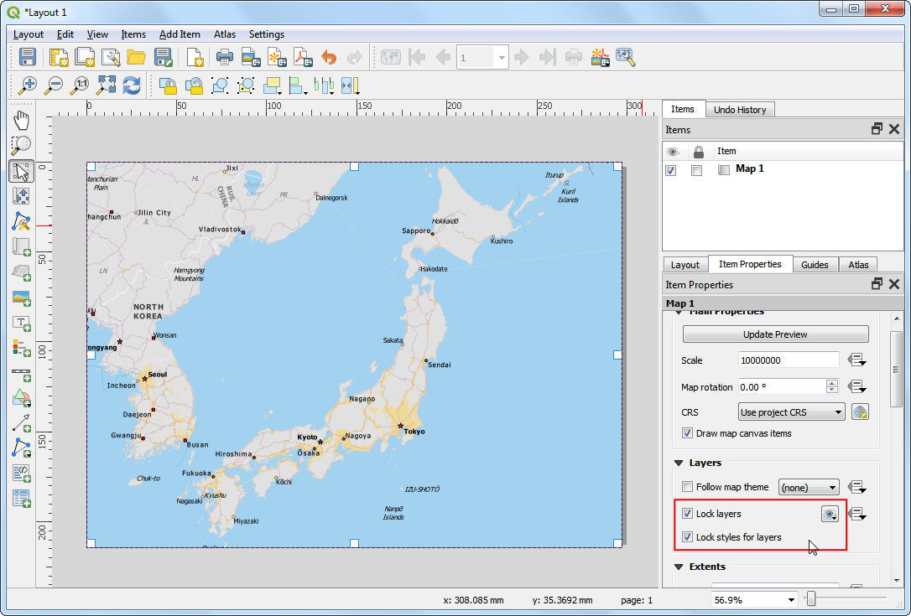
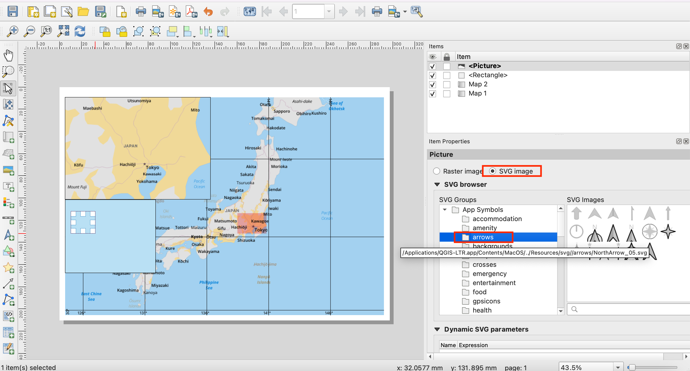
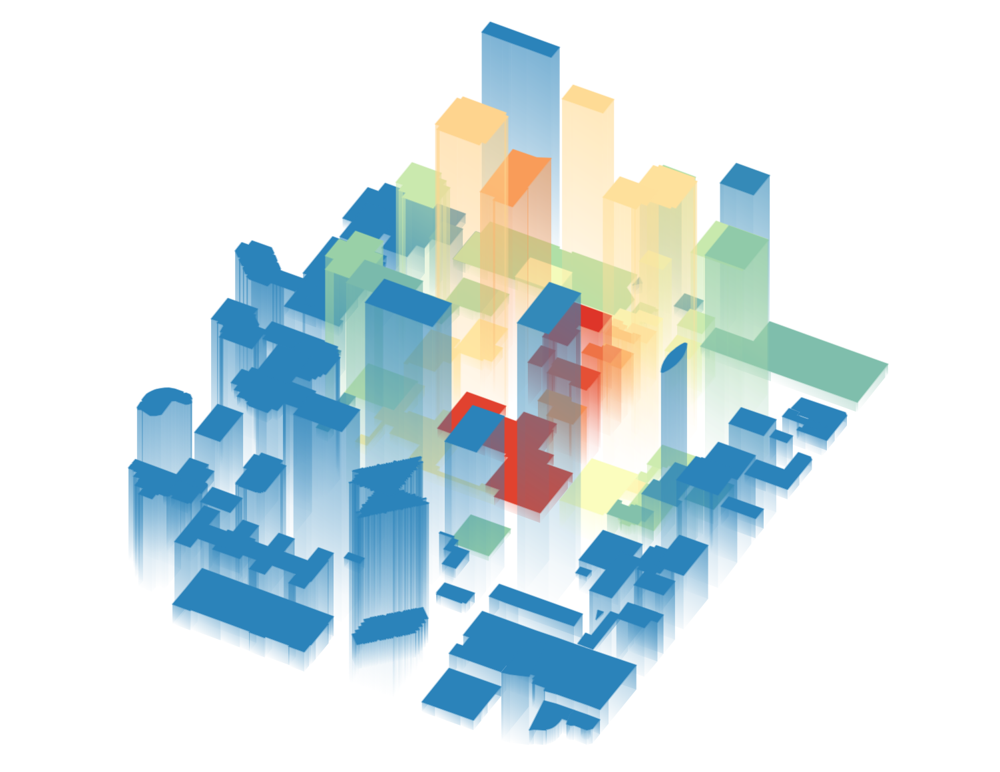

Een kaart maken (QGIS3)¶
Vaak wil men een kaart maken die kan worden afgedrukt of gepubliceerd. QGIS heeft een krachtig gereedschap, genaamd Afdruklay-out dat u in staat stelt uw GIS-lagen te nemen en ze te verpakken om kaarten te maken.
Overzicht van de taak¶
De handleiding laat zien hoe een kaart van Japan kan worden gemaakt met standaard elementen voor de kaart, zoals kaart invoegen, rasters, noordpijl, schaalbalk, legenda en label.
Andere vaardigheden die u zult leren¶
Hoe de QGIS projectvariabelen te bekijken en te wijzigen
Hoe expressies van QGIS te gebruiken
De gegevens ophalen¶
We zullen een gegevensset van Natural Earth gebruiken - specifiek de Natural Earth Quick Start Kit die prachtig opgemaakte globale lagen bevat die direct in QGIS kunnen worden geladen.
Download de Natural Earth Quickstart Kit. Als de link voor het downloaden niet werkt, haal het dan direct op vanaf de pagina Natural Earth Downloads.
Gegevensbron [NATURALEARTH]
Procedure¶
Download en pak de gegevens van de Natural Earth Quick Start Kit uit. Open QGIS. Zoek naar de map
Natural Earth quick startin het paneel Browser. Vergroot de map om het projectNatural_Earth_quick_start_for_QGIS_v3te zoeken. Dat is het projectbestand dat opgemaakte lagen in de indeling QGIS Document bevat. Dubbelklik op het project om het te openen.

Notitie
Als u een pop-updialoogvenster krijgt genaamd Afhandelen niet beschikbare lagen, klik op de knop Automatisch zoeken, gevolgd door Wijzigingen toepassen om de fout te repareren.
Als uw kaart in de door u gewenste taal is, kunt u doorgaan met Stap 4. Zo niet kunt u de taal van de labels wijzigen. Dit project gebruikt variabelen om de taal in te stellen. We kunnen de variabelen wijzigen door te gaan naar .

Notitie
Projectvariabelen zijn een fantastische manier om projectspecifieke waarden op te slaan om overal te kunnen gebruiken waar u een expressie in QGIS kunt gebruiken. Het project Natural_Earth_quick_start_for_QGIS_v3 komt met veel vooringestelde variabelen die worden gebruikt voor opmaak in dat project.
Schakel naar de tab Variabelen in het dialoogvenster Projecteigenschappen. Zoek naar de variabele
project_languageen klik op de kolom Waarde om die te bewerken. Wijzig de taal naarname_enen klik op OK.

Klik, terug in het hoofdvenster van QGIS, op de knop Bijwerken in de werkbalk Kaartnavigatie. U zult de kaart nu gerenderd zien worden met Engelse lanels.

Gebruik de gereedschappen voor verschuiven en zoomen op de werkbalk Kaartnavigatie en zoom naar Japan.

U kunt enkele kaartlagen voor gegevens die we niet nodig hebben voor deze kaart uitschakelen. Vergroot de map
z5 - 1:18men deselecteer het vak naast de lagenne_10m_geography_marine_polysenne_10m_admin_0_disputed_areas. We moeten een toepasselijke projectie kiezen voor we een kaart geschikt maken voor afdrukken. Het standaard CRS voor het project is ingesteld opEPSG:3857 Pseudo-Mercator. Dit is een CRS dat populair wordt gebruikt voor webkaarten en een goede keuze is voor ons doel, dus kunnen we het laten staan op zijn standaard waarde. Ga naar .

Notitie
Voor Japan is Japan Plane Rectangular CS een geprojecteerd coördinaten referentiesysteem (CRS) dat ontworpen is voor minimale vervormingen. Het is opgedeeld in 18 zones en als u werkt met een kleinere regio in Japan, is het gebruiken van dit CRS beter.
U zult worden gevraagd een titel voor de afdruklay-out in te vullen. U mag die leeg laten en klik op OK.

Notitie
Leeg laten van de naam van de printvormgeving zal een standaard naam, zoals Lay-out 1, toewijzen.
Klik, in het venster Afdruklay-out, op Zoom naar 100% om de volledige inhoud van de lay-out weer te geven.

Nu zouden we de kaartweergave die we zien in het kaartvenster van QGIS moeten overbrengen naar de lay-out. Ga naar .

Als de modus Kaart toevoegen actief is, houdt dan de linker muisknop ingedrukt en sleep een rechthoek waar u de kaart wilt invoegen.

U zult zien dat het rechthoekige venster zal worden gerenderd met de kaart uit het kaartvenster van QGIS. De gerenderde kaart zou niet het gehele gebied van onze interesse kunnen bedekken. Gebruik de opties en om de kaart in het venster te verschuiven en het in de lay-out te centreren.

Laten we het zoomniveau voor de kaart aanpassen. Klik op de tab Item-eigenschappen en voer 10000000 in als waarde voor Schaal.

Nu zullen we een kaartdetail toevoegen dat een ingezoomde weergave van het gebied rondom Tokio weergeeft. Selecteer, vóór we wijzigingen maken in het hoofdvenster van QGIS, de vakken Lagen vergrendelen en Stijlen voor lagen vergrendelen. Dat zal er voor zorgen dat als we enkele lagen uitschakelen of hun stijlen wijzigen, deze weergave niet zal wijzigen.

Schakel naar het hoofdvenster van QGIS. Schakel de groep lagen
z5 - 1:18muit en activeer de groepz7 - 1: 4m. Deze groep lagen heeft een opmaak die meer toepasselijk is voor een ingezoomde weergave. Gebruik de gereedschappen voor verschuiven en zoomen op de werkbalk Kaartnavigatie en zoom naar de omgeving van Tokio.

We zijn nu klaar om het kaartdetail in te voegen. Schakel naar het venster Afdruklay-out. Ga naar .

Sleep een rechthoek op de plaats waar u het kaartdetail wilt plaatsen. U zult nu zien dat we 2 kaartobjecten in de afdruklay-out hebben. Zorg ervoor, bij het maken van wijzigingen, dat u de juiste kaart hebt geselecteerd.

Selecteer het object
Kaart 2dat we zojuist hebben toegevoegd uit het paneel Items. Selecteer de tab Item-eigenschappen. Scroll naar beneden naar het paneel Frame en selecteer het vak ernaast. U kunt de kleur en dikte van de rand van het frame wijzigen zodat het eenvoudig te onderscheiden is van de achtergrond van de kaart.

Een handige mogelijkheid van afdruklay-out is dat het automatisch het gebied van de hoofdkaart, dat wordt weergegeven in ons kaartdetail, kan accentueren. Selecteer het object
Kaart 1uit het paneel Items. Scroll, op de tab Item-eigenschappen, naar beneden tot het gedeelte Overzichtskaarten. Klik op de knop Een nieuw overzicht toevoegen.

Selecteer
Kaart 2als het Kaartframe. Wat dit aan de afdruklay-out doorgeeft is dat het ons huidige objectKaart 1moet accentueren met het bereik van de kaart die wordt weergegeven in het objectKaart 2.

Nu we het kaartdetail gereed hebben, zullen we een raster aan de hoofdkaart toevoegen. Selecteer het object
Map 1uit het paneel Items. Scroll, op de tab Item-eigenschappen, naar beneden naar het gedeelte Rasters. Klik op de knop Voeg een nieuw raster toe, gevolgd door Raster aanpassen….

Standaard hebben de rasterlijnen dezelfde eenheden en projecties als de huidige geselecteerde kaartprojecties. Het is echter meer algemeen en handiger om de rasterlijnen in graden weer te geven. We kunnen een ander CRS selecteren voor het raster. Klik op de knop Wijzigen… naast CRS.

Voer, in het dialoogvenster Keuze Coördinaten ReferentieSysteem,
4326in in het vak Filter. Selecteer uit de resultatenWGS84 EPSG:4326als het CRS. Klik op OK.

Selecteer de waarden Interval als
5graden in beide richtingen X en Y. U kunt de Verspringing aanpassen om te wijzigen waar de rasterlijnen verschijnen.

Scroll naar beneden naar het gedeelte Frame en selecteer het vak Coördinaten tekenen. De standaard indeling is
Decimalenmaar het verschijnt als een getal. We kunnen het aanpassen om een synmbool ° toe te voegen. KiesAangepasten klik op de knop Expressie ernaast.

Voer de volgende expressie in om een tekenreeks te maken dat het getal van het raster neemt en daar een symbool ° aan toevoegt.
concat(to_string(@grid_number), '° ')
Merk nu op dat de rasters een aangepast label hebben vanuit de expressie. Pas de instellingen voor de positie aan voor Links, Rechts, Boven en Onder zoals u dat wilt.

Nu zullen we een rechthoekig frame toevoegen dat andere kaartelementen, zoals noordpijl, schaalbalk en label, zal bevatten. Ga naar .

U kunt de Stijl van de rechthoek wijzigen zodat die overeenkomt met de achtergground.

Nu zullen we een noordpijl aan de kaart toevoegen. QGIS bevat een aardige collectie kaartgerelateerde afbeeldingen - inclusief vele typen noordpijlen. Klik op .

Teken, met de linkermuisknop ingedrukt, een rechthoek. Klik, in het paneel aan de rechterkant, op de tab Item-eigenschappen en selecteer het gedeelte SVG-afbeelding en scroll naar beneden naar arrows in de SVG Groepen. Selecteer de afbeelding die u wilt.

Nu zullen we een schaalbalk toevoegen. Klik op .

Klik in de lay-out waar u de schaalbalk wilt laten verschijnen. Zorg er voor dat u, op de tab Item-eigenschappen, het juiste kaartelement
Kaart 1hebt gekozen dat de schaalbalk moet weergeven. Kies de stijl die aan uw eisen voldoet. Wijzig in het paneel Segmenten, de Vaste grootte naar200eenheden en pas de segmenten naar uw wensen aan.

Nu is het tijd om onze kaart te labelen. Klik op .

Klik op de kaart en teken een vak waar het label zouten staan. Vergroot, in de tab Item-eigenschappen, het gedeelte Label en voer een label voor de kaart in. Voeg op soortgelijke wijze labels toe voor auteursrechten voor software en gegevens.

Als u eenmaal tevreden bent met de kaart, kunt u die exporteren als een afbeelding, PDF of SVG. Laten we het voor deze handleiding exporteren als een afbeelding. Klik op .

Sla de afbeelding op in de indeling van uw voorkeur. Hieronder staat de geëxporteerde PNG-afbeelding.

If you want to give feedback or share your experience with this tutorial, please comment below. (requires GitHub account)